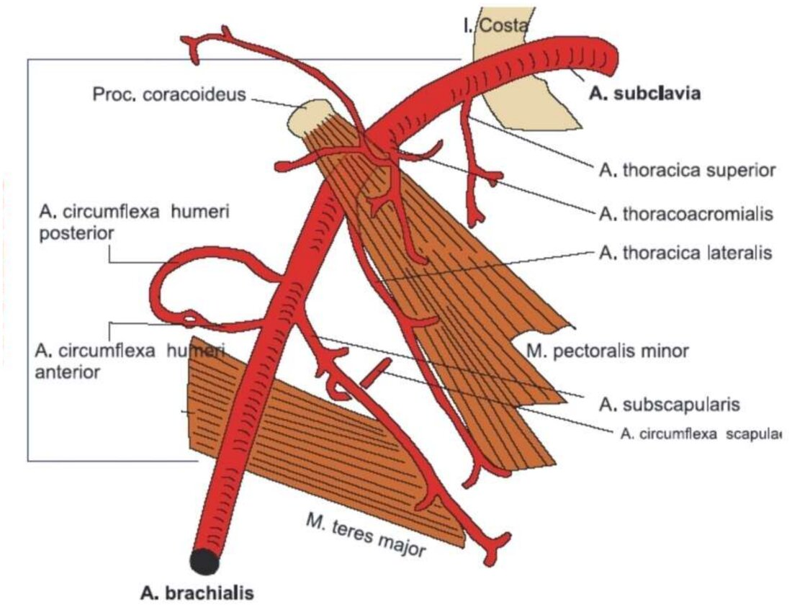
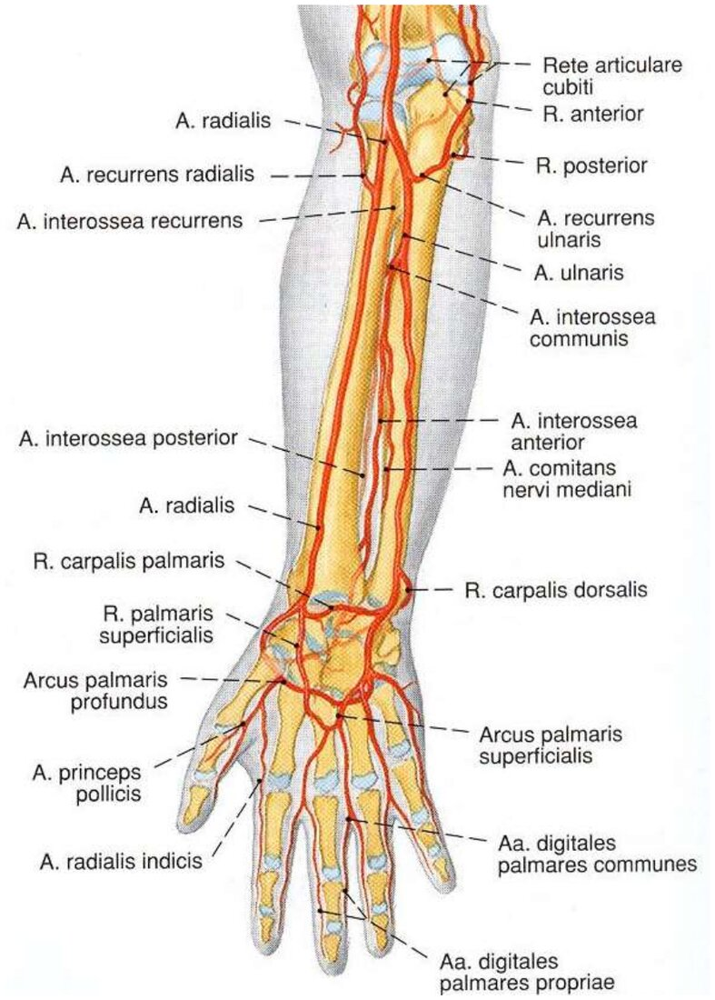
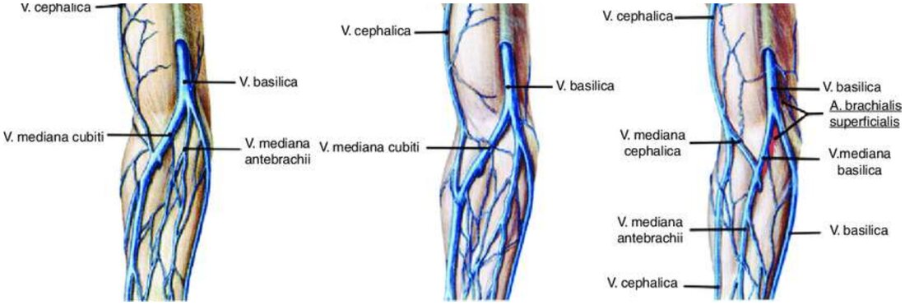

Bölüm 2 · Arteriae et venae membri superioris
Üst ekstremite damarları bu kurulun en çok soru gelen konularından biridir. Sorular dört noktada toplanır: a. axillaris'in hangi dalının hangi kası ya da bölgeyi beslediği (m. latissimus dorsi, meme), a. radialis ile a. ulnaris'in ayrımı ve el arkları, intravenöz girişim için kullanılan yüzeyel venler ve derin venlerin adları. Bu bölüm önce ana arterin ad değiştirdiği sınırları, sonra her segmentin dallarını, en sonda venleri anlatır.
Ekstremitelerin ana arteri tek bir damardır ve belirli kemik ya da kas sınırlarını geçtikçe ad değiştirir. Sınavda "a. axillaris nerede başlar" ya da "a. brachialis nerede ikiye ayrılır" soruları bu sınırlarla cevaplanır (Şekil 2.1). Üst ekstremitede a. subclavia 1. kaburganın dış kenarında a. axillaris olur. A. axillaris m. teres major'un alt kenarında a. brachialis adını alır. A. brachialis fossa cubiti'de, collum radii hizasında a. radialis ile a. ulnaris'e ayrılır. İki arter elde iki arkus oluşturur. Alt ekstremitenin aynı sıralaması Bölüm 7'de anlatılır, ama karşılaştırma kolaylığı için şekilde yan yana verilmiştir.
A. axillaris fossa axillaris içinde seyreder. Önünden çaprazlayan m. pectoralis minor arteri üç bölüme ayırır ve her bölümün dal sayısı bölüm numarasına eşittir: birinci bölüm bir dal, ikinci bölüm iki dal, üçüncü bölüm üç dal verir. Bu "1-2-3 kuralı" dalları ezberlemenin en kolay yoludur.
| Bölüm | Sınırları | Dalları ve beslediği yer |
|---|---|---|
| 1. bölüm | 1. kaburganın dış kenarı → m. pectoralis minor'un üst kenarı | A. thoracica superior (suprema): küçük bir dal. İlk iki interkostal aralığın kasları ve m. serratus anterior'un üst kısmı. Bazen bulunmaz. |
| 2. bölüm | M. pectoralis minor'un arkası | A. thoracoacromialis: kısa bir kök hâlinde arterin ön yüzünden çıkar ve fascia clavipectoralis'i delerek yüzeyelleşir. Göğüs kasları, deltoid ve akromiyon bölgesi. |
| A. thoracica lateralis: m. pectoralis minor'un alt kenarı boyunca iner. Bölge kasları, koltuk altı lenf düğümleri ve rr. mammarii laterales ile memenin lateral bölümü. Kadınlarda daha kalındır. | ||
| 3. bölüm | M. pectoralis minor'un alt kenarı → m. teres major'un alt kenarı | A. subscapularis: a. axillaris'in en kalın dalı. 4-5 cm sonra ikiye ayrılır: a. thoracodorsalis (n. thoracodorsalis ile birlikte m. latissimus dorsi'yi besler) ve a. circumflexa scapulae (daha kalındır, spatium axillare mediale'den skapulanın arkasına geçer). |
| A. circumflexa humeri anterior: humerus başı ve omuz eklemi. | ||
| A. circumflexa humeri posterior: n. axillaris ile birlikte spatium axillare laterale'den geçer ve collum chirurgicum'u arkadan dolanır. Öndeki circumflex arterle anastomoz yapar. |

2024-2025 sınavında m. latissimus dorsi'yi besleyen arter iki ayrı soruda a. subscapularis'in dalı a. thoracodorsalis olarak soruldu. 2023-2024'te memenin lateral dalları ("a. mammaria lateralis") soruldu. Bu dallar a. axillaris'in ikinci bölümünden çıkan a. thoracica lateralis'ten gelir. Memenin medial kısmı ise a. thoracica interna'nın perforan dallarıyla beslenir (Bölüm 1.2). Meme cerrahisinde aksiller lenf diseksiyonu yapılırken a. thoracica lateralis ile a. thoracodorsalis ve n. thoracodorsalis korunmaya çalışılır.
Spatium axillare'ler. Koltuk altının arka duvarında m. teres major, m. teres minor, caput longum m. tricipitis ve humerus iki boşluk sınırlar. Spatium axillare mediale (üçgen boşluk) a. circumflexa scapulae'yi, spatium axillare laterale (dörtgen boşluk) a. circumflexa humeri posterior ile n. axillaris'i geçirir. Collum chirurgicum kırığında bu yüzden n. axillaris ve a. circumflexa humeri posterior birlikte tehlikededir.
A. brachialis m. teres major'un alt kenarında başlar. Kolda önce humerusun medialinde, aşağıya doğru humerusun önünde seyreder. Klavikulanın ortasını fossa cubiti'nin ortasına birleştiren çizgi arterin koldaki seyrini gösterir. Fossa cubiti'de, collum radii hizasında a. radialis ve a. ulnaris'e ayrılır. Dalları:
Kolun collateral arterleri ön kolun recurrent arterleriyle (a. recurrens radialis, a. recurrens ulnaris, a. interossea recurrens) dirsek çevresinde rete articulare cubiti ağını oluşturur. Bu ağ a. brachialis'in dirsek üzerinde bağlanması durumunda ön kolun beslenmesini sürdürür.
| Özellik | A. radialis | A. ulnaris |
|---|---|---|
| Kalınlık ve yer | Daha ince, ön kolun dış (lateral) kenarında | Daha kalın, medialde, n. ulnaris ile birlikte |
| Seyir çizgisi | Fossa cubiti'nin ortası → proc. styloideus radii'nin iç kısmı | Ön kolun üst 1/3'ünde derin kasların altında, sonra medialde |
| El bileğinde | Radiusun üzerinde (nabız yeri), sonra radiusun distal ucunu dıştan dolanıp fovea radialis'e (anatomik enfiye çukuru) gelir | Retinaculum flexorum'un yüzeyelinden ele girer |
| Elde | El sırtında 1. metakarpal aralığa ulaşır, buradaki interosseöz kası delerek avuca geçer ve arcus palmaris profundus'u oluşturur | Arcus palmaris superficialis'i oluşturur |
| Arkı tamamlayan dal | A. ulnaris'in r. palmaris profundus'u | A. radialis'in r. palmaris superficialis'i |
| Başlıca dalları | A. recurrens radialis, rr. carpales palmaris ve dorsalis, r. palmaris superficialis, a. princeps pollicis, a. radialis indicis | A. recurrens ulnaris, a. interossea communis (→ a. interossea anterior ve posterior), rr. carpales, r. palmaris profundus |

Arcus palmaris superficialis esas olarak a. ulnaris'in devamıdır ve a. radialis'in r. palmaris superficialis'iyle tamamlanır. Ondan üç a. digitalis palmaris communis çıkar. Her biri parmak köklerinde iki a. digitalis palmaris propria'ya ayrılır. Arcus palmaris profundus esas olarak a. radialis'in devamıdır, a. ulnaris'in r. palmaris profundus'uyla tamamlanır ve daha proksimalde, metakarpların tabanı düzeyinde bulunur. Ondan aa. metacarpales palmares ve rr. perforantes çıkar. 2025-2026 uygulama sınavında arcus palmaris superficialis ve a. interossea anterior gösterildi.
El bileği ağları. Rete carpale dorsale ekstensor kirişlerinin altında a. radialis ve a. ulnaris'in rr. carpales dorsales'i ile a. interossea anterior ve posterior tarafından oluşturulur. Rete carpale palmare karpal kemikleri örten bağların önünde a. interossea anterior'un dalları, iki arterin rr. carpales palmares'i ve arcus palmaris profundus'un dallarıyla oluşur. Arkuslar el bileği ağlarını oluşturmaz.
Derleme S68'in beş şıkkı bu bölümün tuzaklarını sıralar. Ön koldaki ikiye ayrılma a. axillaris'in değil a. brachialis'in işidir. A. collateralis ulnaris superior ve inferior a. brachialis'in dallarıdır, a. ulnaris'in değil. Arcus palmaris profundus esas olarak a. radialis'ten oluşur. Arkuslar avuç içindedir, el sırtındaki rete carpale dorsale ile karışmaz. Doğru ifade şudur: a. radialis a. ulnaris'ten daha ince ve dış kenardadır. Radial nabız el bileğinde m. flexor carpi radialis ile m. brachioradialis'in tendonları arasında alınır (Derleme S67'nin B şıkkı. 2023-2024 S4'te nabız alınan yerler soruldu, ancak şıklar bozuk kaydedildiği için soru havuza alınmadı).
Üst ekstremite venleri üç gruptur. Yüzeyel venler yüzeyel fasyanın iki yaprağı arasında, deri altında seyreder ve çoğu yerde gözle görülür. Derin venler arterlere eşlik eder, eşlik ettikleri arterin adını alır ve genellikle bir artere iki ven düşer (vv. comitantes). Kommunikan (perforan) venler iki sistemi birbirine bağlar. Yüzeyel ve derin venlerin ikisinde de kapak vardır.
Yüzeyel venler el sırtındaki rete venosum dorsale manus'tan başlar. Parmakların yan kenarlarındaki vv. digitales dorsales birleşerek vv. metacarpales dorsales'i, bunlar da el sırtındaki ağı oluşturur.

Derin venler şunlardır: avuçta arcus venosus palmaris superficialis ve profundus, ön kolda arterlere ikişer eşlik eden vv. radiales ve vv. ulnares (vv. interosseae bunlara açılır), kolda a. brachialis'in iki yanındaki vv. brachiales (Derleme S65: üst ekstremitenin derin veni olarak vv. brachiales soruldu). Vv. radiales ve ulnares dirsek yakınında birleşerek vv. brachiales'i oluşturur. Vv. brachiales m. subscapularis yakınında v. axillaris'e açılır. Mediali sıklıkla v. basilica ile bağlantı kurar.
V. axillaris v. basilica'nın fossa axillaris'teki devamıdır. M. teres major'un alt kenarından 1. kaburganın dış kenarına kadar uzanır ve burada v. subclavia adını alır. Başlangıcında vv. brachiales'i, sonuna yakın v. cephalica'yı alır.
V. cephalica, v. basilica, v. mediana cubiti, v. mediana antebrachii ve rete venosum dorsale manus yüzeyel venlerdir. "Derin ven" sorusunun cevabı her zaman bir artere eşlik eden çift venlerdir: vv. radiales, vv. ulnares, vv. brachiales. Akılda tutmanın kolay yolu: lateral = cephalica (baş parmak tarafı, omuz başına gider), medial = basilica (kolun ortasında derine girer).
Doğru: A. A. subscapularis a. axillaris'in üçüncü bölümünden çıkan en kalın daldır. 4-5 cm sonra a. circumflexa scapulae ve a. thoracodorsalis'e ayrılır. A. thoracodorsalis kasın ön kenarı boyunca n. thoracodorsalis ile birlikte iner ve m. latissimus dorsi'yi besler.
B yanlış: a. thoracica lateralis m. serratus anterior'u, göğüs kaslarını, aksiller lenf düğümlerini ve memenin lateralini besler. C yanlış: a. transversa colli'nin derin dalı mm. rhomboidei ve m. levator scapulae bölgesine gider. D yanlış: a. profunda brachii kolun arka kısmına (m. triceps) gider. E yanlış: a. thoracoacromialis göğüs kasları, deltoid ve akromiyon bölgesine dağılır.
Not: öğrenci kaydında yalnızca doğru şık yazılıdır. Diğer şıklar konuya uygun olarak tamamlanmıştır.
Doğru: B. Sunum a. thoracica lateralis'in rr. mammarii laterales dallarıyla memenin lateral bölümünü beslediğini belirtir. Bu arter a. axillaris'in ikinci bölümünden çıkar ve m. pectoralis minor'un alt kenarı boyunca iner. Kadınlarda daha kalındır.
A eksiktir: a. thoracica lateralis a. axillaris'in dalıdır, ama soru memeye giden dalların doğrudan hangi arterden çıktığını sorar. C yanlış: a. subscapularis'in dalları m. latissimus dorsi ve skapulaya gider. D yanlış: a. thoracica interna memenin medial kısmını perforan dallarla (rr. mammarii mediales) besler. E yanlış: a. thoracoacromialis'in dalları göğüs kaslarında kalır.
Not: kayıtta yalnızca A, B ve C şıkları vardır ve kaydı tutan öğrenci "a. subscapularis" yazmış, yanına soru işaretleri koymuştur. Sunumdaki bilgiye göre doğru cevap a. thoracica lateralis'tir. D ve E şıkları eklenmiştir.
Doğru: B. A. radialis a. ulnaris'ten daha incedir ve ön kolun dış kenarında seyreder. El bileğinde radiusun üzerinde yüzeyelleşir ve nabız buradan alınır.
A yanlış: collum radii hizasında ikiye ayrılan arter a. brachialis'tir. A. axillaris m. teres major'un alt kenarında a. brachialis adını alır. C yanlış: kolun collateral ulnar arterleri a. brachialis'ten çıkar ve dirsek ağına katılır. D yanlış: arcus palmaris profundus'u esas olarak a. radialis oluşturur, a. ulnaris yalnızca r. palmaris profundus ile tamamlar. E yanlış: arkuslar avuç içindedir. El bileğinin arkasındaki ağ (rete carpale dorsale) karpal dallardan ve aa. interosseae'den oluşur.
Not: kayıtta C şıkkı "Columbra ulnaris mediores, a. ulnarisin dalıdır" biçiminde bozuk yazılmıştır. Kolun collateral ulnar arterlerini kastettiği kabul edilmiştir.
Doğru: E. Vv. brachiales a. brachialis'in iki yanında uzanan bir çift vendir ve derin sistemdendir. Derin venler arterlere eşlik eder ve arterin adını alır.
A, B, C ve D yanlış: dördü de yüzeyel fasyanın içinde, deri altında seyreden yüzeyel venlerdir. Rete venosum dorsale manus yüzeyel sistemin başlangıcıdır. V. cephalica ve v. basilica bu ağın iki kenarından çıkar. V. mediana antebrachii avucun yüzeyel ağını drene eder.
Doğru: C. V. mediana cubiti dirseğin önünde, deri altında görülen ve kolay ele gelen yüzeyel bir vendir. V. cephalica ile v. basilica arasında bağlantı kurduğu için iyi doludur. Altındaki aponeurosis bicipitalis onu a. brachialis ve n. medianus'tan ayırır.
A, B ve D yanlış: üçü de arterlere eşlik eden derin venlerdir. Derin fasyanın altında, aynı adlı arter ve sinirin yanında seyrederler. Deriden görülmezler ve iğneyle ulaşılmaya çalışılırsa arter ya da sinir zedelenebilir.
Doğru: D. A. circumflexa humeri posterior a. axillaris'in üçüncü bölümünden çıkar, n. axillaris ile birlikte dörtgen boşluktan (spatium axillare laterale) geçer ve collum chirurgicum'u arkadan dolanır.
A yanlış: a. circumflexa scapulae üçgen boşluktan (spatium axillare mediale) geçer. B yanlış: a. thoracodorsalis boşluklardan geçmez, m. latissimus dorsi'ye iner. C yanlış: a. profunda brachii n. radialis ile birlikte sulcus nervi radialis'te seyreder ve humerus cismi kırığında tehlikededir. E yanlış: a. circumflexa humeri anterior collum chirurgicum'u önden dolanan ince daldır ve dörtgen boşluktan geçmez.
Doğru: C. A. ulnaris retinaculum flexorum'un yüzeyelinden ele girer ve avuçta yüzeyel arkı oluşturur. Ark a. radialis'in r. palmaris superficialis'iyle tamamlanır. Ondan üç a. digitalis palmaris communis çıkar.
A yanlış: a. radialis'in devamı derin arkı (arcus palmaris profundus) oluşturur. B ve E yanlış: aa. interosseae a. ulnaris'ten çıkan a. interossea communis'in dallarıdır ve el bileği ağlarına katılır. D yanlış: a. princeps pollicis a. radialis'in başparmağa giden dalıdır.
Doğru: A. A. profunda brachii a. brachialis'in en kalın dalıdır. Humerusun arkasındaki olukta n. radialis ile birlikte seyreder ve a. collateralis radialis olarak dirseğe iner.
B yanlış: a. collateralis ulnaris superior n. ulnaris'e eşlik eder. C yanlış: a. recurrens radialis a. radialis'ten çıkar ve dirseğe doğru yukarı döner. Kolda seyretmez. D yanlış: bu arter n. axillaris ile omuz bölgesindedir. E yanlış: a. collateralis ulnaris inferior dirseğin hemen üstünde çıkar ve medialde kalır.
Doğru: E. V. cephalica kolun üst kısmında m. deltoideus ile m. pectoralis major arasındaki olukta yükselir. Trigonum deltopectorale'de fascia clavipectoralis'i delerek koltuk altına girer ve v. axillaris'e açılır. A. thoracoacromialis aynı fasyayı ters yönde deler.
A yanlış: fascia axillaris koltuk altının tabanıdır, v. cephalica oraya alttan girmez. B yanlış: medial intermüsküler septum ile ilişkili ven v. basilica'dır. C yanlış: aponeurosis bicipitalis dirsekte v. mediana cubiti'nin altındadır. D yanlış: kolun derin fasyasını kolun ortasında delen ven v. basilica'dır.
Doğru: D. A. ulnaris başlangıcından kısa süre sonra a. interossea communis'i verir. Bu kısa gövde a. interossea anterior ve posterior'a ayrılır. A. interossea anterior membrana interossea'nın önünde iner ve el bileği ağlarına katılır.
A yanlış: a. radialis'in dalları recurrent radial arter, karpal dallar ve elin dallarıdır. B yanlış: a. brachialis kolda profunda ve collateral dalları verir, interosseöz arterler ön koldan çıkar. C yanlış: a. profunda brachii kolun arkasındadır. E yanlış: arcus palmaris profundus avuçtadır ve metakarpal arterler verir.
Doğru: A. A. radialis el bileğinde radiusun distal ucunu dıştan dolanır, fovea radialis'in tabanından geçer ve el sırtında 1. metakarpal aralığa ulaşır.
B yanlış: a. ulnaris el bileğinin medialinde, retinaculum flexorum'un yüzeyelinden geçer. C yanlış: a. interossea posterior ön kolun arkasında kalır. D ve E yanlış: bu iki arter a. radialis'in avuçtaki dallarıdır ve enfiye çukurundan sonra çıkar.